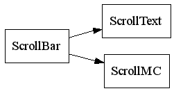
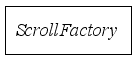

Package com.idescn.utils.scroll
Interface Summary
ScrollFactory
scroll interface,[Deprecated]
Class Summary
ScrollBar
scrolling, when drag scroll bar.
ScrollMC
scroll movieclip.
ScrollText
scroll textfield,
Class Inheritance Diagram

Interface Inheritance Diagram

Overview
Package
Class
Index